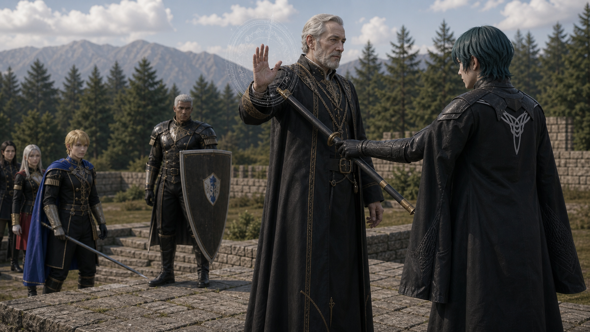

P0 Scene09 Reference Board
Index
镜头034D：贝雷特中断教师目标反扑
Byleth 打断 Hanneman 术式
Generated Keyframe

Character Reference Assets

Byleth
calm professor commander, continuity anchor between front and flank lines
assets/characters/protagonist/Byleth/professor/selected.png
Hanneman
older scholarly teacher, wind/Sagittae angle on raised heal-tile platform
assets/characters/church_of_seiros/Hanneman/academy/selected.png
Dimitri
youthful blond Blue Lions prince, training lance, aggressive but controlled
assets/characters/blue_lions/Dimitri/academy/selected.png
Dedue
tall broad guardian, dark skin, white hair, shield-wall posture
assets/characters/blue_lions/Dedue/academy/selected.pngSubframes
分镜点 A：汉尼曼施法角度
Hanneman raises wind/Sagittae from the elevated heal-tile position while Ashe suppresses his line.
episodes/EP02/generated/mock_battle_production_keyframes_2026-07-17/Shot034D_A_keyframe.png
分镜点 B：贝雷特截停
Byleth cuts into the spell angle with training-steel precision, stopping the teacher objective route rather than injuring the teacher.
episodes/EP02/generated/mock_battle_production_keyframes_2026-07-17/Shot034D_B_keyframe.png
分镜点 C：帝弥托利压住战线
Dimitri arrives with weapon lowered enough to show restraint and victory control.
episodes/EP02/generated/mock_battle_production_keyframes_2026-07-17/Shot034D_C_keyframe.png
分镜点 D：击破信号
Manuela has stepped off the tile and the remaining students lower weapons, making the rout cinematic and clear.
episodes/EP02/generated/mock_battle_production_keyframes_2026-07-17/Shot034D_D_keyframe.png
Production Prompt
Create a production-ready cinematic live-action storyboard keyframe for EP02 Scene09 mock battle, Shot034D Byleth Breaks Hanneman Spell.
Current script beat: Byleth 打断 Hanneman 术式.
Frame content: Byleth enters Hanneman blind side on heal platform and taps casting wrist with sheathed blade; Dimitri holds position.
Characters and identity locks: Byleth as calm young mercenary professor, dark teal hair, black academy combat outfit, composed unreadable expression; Hanneman older scholarly teacher, wind magic casting angle, supervised nonlethal authority; Dimitri as blond academy prince, youthful, blue academy uniform, training lance, intense but restrained; Dedue very tall and broad-shouldered, dark skin, short white hair, shield-wall guardian posture.
The setting is the canon-inspired Garreg Mach outdoor mock battle field: one continuous tactical map with grass, low stone walls, wooden barriers, thickets, stone steps, and a northeast raised heal-tile platform. It must not look like a small training yard or isolated sparring ring.
Use wooden or blunted academy training weapons, controlled nonlethal contact, no blood, no serious injury. Make the frame readable as a movie storyboard still that can guide AI video generation: clear geography, character blocking, screen direction, and the peak tactical action.
Camera: Byleth enters Hanneman blind side on the raised healing platform and taps Hanneman wrist or staff hand with a sheathed blade, interrupting the last spell without injury. Dimitri holds position rather than overstriking. Dedue covers the stairs..
Style: photorealistic live-action, 16:9 cinematic frame, natural daylight, youthful academy students, identity-locked faces and costumes, no UI.
Character asset reference requirement:
- Byleth: assets/characters/protagonist/Byleth/professor/selected.png; calm professor commander, continuity anchor between front and flank lines
- Hanneman: assets/characters/church_of_seiros/Hanneman/academy/selected.png; older scholarly teacher, wind/Sagittae angle on raised heal-tile platform
- Dimitri: assets/characters/blue_lions/Dimitri/academy/selected.png; youthful blond Blue Lions prince, training lance, aggressive but controlled
- Dedue: assets/characters/blue_lions/Dedue/academy/selected.png; tall broad guardian, dark skin, white hair, shield-wall posture
The generated face, hairstyle, age impression, costume silhouette, and color accents must remain continuous with these selected.png assets across all subframes.